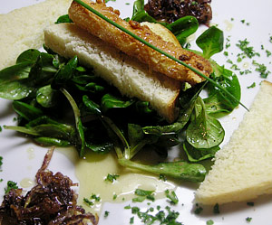

Ausgebackener Ziegenkäse mit Honig
5 von 63 rote Zwiebeln fein geschnitten in Olivenöl bei schwacher Hitze braten. 50 gr Zucker beigen und weitere 10 min braten, bis der Zucker kamellisiert ist. Abkühlen lassen.
Ziegenkäse in kleine Kugeln oder Stangen formen, durch ein zerquirltes Ei ziehen und dann in Mehl wenden. In reichlich Olivenöl langsam Goldbraun braten.
Den Teller mit etwas Salat, Toastbrot, Honig, den kamellisierten Zwiebeln und dem Käse anrichten.
